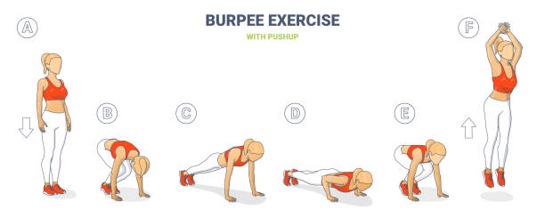

¡Personaliza tu Entrenamiento!
Selecciona tus datos para obtener el plan perfecto para ti
Preparando tu plan personalizado...
🔥 Entrenamiento QUEMAGRASA para Hombres
🎯 Tu Objetivo
¡Perfecto! Has elegido el plan ideal para transformar tu cuerpo. Este entrenamiento está diseñado específicamente para hombres que quieren eliminar esa grasa corporal de una vez por todas y revelar un físico definido y atlético.
⚡ Los Fundamentos del Éxito
- Entrenamientos HIIT que queman grasa durante y después del ejercicio
- Ejercicios de cuerpo completo para máxima eficiencia
- Intervalos de alta intensidad que aceleran tu metabolismo
- Rutinas que puedes hacer en cualquier lugar, sin excusas
🏃♂️ Tu Rutina Semanal Explosiva
- Lunes - Cardio HIIT:
- Jumping jacks – 4 series de 30 segundos
- Burpees – 3 series de 15 repeticiones 
- Mountain climbers – 3 series de 30 segundos
- Sprints en el sitio – 3 series de 20 segundos

- Martes - Fuerza Funcional:
- Flexiones – 3 series de 15
- Sentadillas – 3 series de 20
- Planchas – 3 series de 30 segundos
- Elevación de rodillas – 3 series de 20
- Miércoles - Cardio + Core:
- Jump squats – 3 series de 15
- Plancha con toques – 3 series de 20 segundos
- Crunches – 3 series de 25
- Burpees – 3 series de 12
- Jueves - Recuperación Activa: Caminata de 30 minutos + estiramientos
- Viernes - Circuito Final: Combina todos los ejercicios anteriores
🥗 Alimentación para Quemar Grasa
- Déficit calórico controlado (no extremo)
- Proteína en cada comida para mantener el músculo
- Carbohidratos complejos antes del entrenamiento
- Mucha agua (mínimo 2.5 litros al día)
- Elimina: azúcares procesados, frituras, alcohol
💡 Consejos de Campeón
- Entrena en ayunas para maximizar la quema de grasa
- Duerme 7-8 horas para optimizar la recuperación
- Toma fotos de progreso cada semana
- La consistencia vence a la perfección
💪 Plan MUSCLE BUILDER para Hombres
🎯 Tu Misión
¡Excelente elección! Vas a construir el físico que siempre has soñado. Este plan está diseñado para maximizar el crecimiento muscular con ejercicios estratégicos y progresión constante.
🏗️ Principios para Construir Músculo
- Sobrecarga progresiva: cada semana debe ser más desafiante
- Enfoque en ejercicios compuestos para máximo crecimiento
- Descanso óptimo entre series (60-90 segundos)
- Trabajo de cada grupo muscular 2 veces por semana
🏋️♂️ Tu Rutina de Construcción
- Lunes - Pecho y Tríceps:
- Flexiones tradicionales – 4 series de 12
- Flexiones diamante – 3 series de 10
- Fondos en silla – 3 series de 12
- Flexiones declinadas – 3 series de 10
- Martes - Espalda y Bíceps:
- Remo con mochila – 4 series de 12
- Pull-ups (o isométricos) – 3 series al fallo
- Curl de bíceps con toalla – 3 series de 12
- Superman – 3 series de 15
- Miércoles - Piernas:
- Sentadillas profundas – 4 series de 15
- Zancadas caminando – 3 series de 12 por pierna
- Puente de glúteos – 3 series de 15
- Elevación de talones – 4 series de 20
- Jueves - Hombros y Abdomen:
- Flexiones pike – 4 series de 10
- Elevaciones laterales (botellas) – 3 series de 12
- Plancha – 3 series de 45 segundos
- Crunches – 3 series de 20
- Viernes - Explosivo Full Body:
- Burpees – 3 series de 15
- Flexiones con salto – 3 series de 10
- Squat jumps – 4 series de 12
- Mountain climbers – 4 series de 30 segundos
🍖 Nutrición para Construir Músculo
- Superávit calórico (300-500 calorías extra al día)
- 2 gramos de proteína por kg de peso corporal
- Carbohidratos post-entreno para recuperación
- Grasas saludables: aguacate, frutos secos, aceite de oliva
- Come cada 3-4 horas para mantener el anabolismo
⚖️ Plan EQUILIBRIO para Hombres
🎯 Tu Enfoque
¡Perfecta elección! Este plan está diseñado para mantener tu forma física actual, mejorar tu salud general y disfrutar de un estilo de vida activo y balanceado.
🌟 Principios del Equilibrio
- Consistencia sobre intensidad extrema
- Variedad para evitar el aburrimiento
- Flexibilidad para adaptarse a tu horario
- Enfoque en salud y bienestar general
🏃♂️ Tu Rutina Balanceada
- Lunes - Cardio Moderado:
- Caminata rápida – 25 minutos
- Plancha – 3 series de 45 segundos
- Crunches – 3 series de 20
- Estiramientos – 10 minutos
- Miércoles - Fuerza General:
- Flexiones – 3 series de 12
- Sentadillas – 3 series de 15
- Fondos en silla – 3 series de 10
- Plancha lateral – 2 series de 30s cada lado
- Viernes - Circuito Ligero:
- Jumping jacks – 2 series de 30 segundos
- Sentadillas – 2 series de 12
- Flexiones – 2 series de 10
- Mountain climbers – 2 series de 20 segundos
🍎 Alimentación Balanceada
- Regla 80/20: 80% saludable, 20% flexible
- Todos los grupos alimenticios incluidos
- Hidratación constante
- Porciones conscientes sin restricciones extremas
🔥 Plan QUEMAGRASA para Mujeres
🎯 Tu Transformación
¡Increíble decisión! Este plan esta ajustado al ciclo menstrual para perdida de grasa y tonificacion
💃 Principios Femeninos
- Ejercicios que respetan tu fisiología femenina
- Énfasis en core y zona glútea
- Adaptación según tu ciclo menstrual
- Combinación perfecta de cardio y tonificación
🏃♀️ Tu Rutina De Entrenamiento Segun Ciclo Menstrual
- 🩸- Semana 1- Menstruacion (Dia 1-5) :
OBJETIVO: mover el cuerpo sin exigir demasiado.
- DIA 1: yoga estiramiento 30 min + caminata suave 20 min
- DIA 2:tren superior ligero
- DIA 3: Descanso activo
- DIA 4: Tren inferior ligero
- DIA 5: Cardio suave
- DIA 6 -7: Descanso activo
descanso 60-90 seg entre ejercicios
jalon al pecho o con banda: 3 series x 12-15 repeticiones
Press banca con mancuernas (peso ligero): 3x12-15
Remo con mancuernas 3 x 12
Plancha: 3x20-30 segundos
Caminata ligera 30 min o movilidad.
Descanso: 60 seg entre ejercicios.
Sentadilla sin peso o con poco peso: 3x12-15
Puente de gluteo: 3x15
Peso muerto con mancuernas ligeras: 3x12
Abduccion de cadera con banda: 3x20
Caminata rapida o bici estatica: 30-40 min a ritmo cardiaco
Yoga, movilidad, caminata ligera 20-30 min.
- Martes - Tren Inferior:
- Sentadillas sumo – 4 series de 15
- Zancadas laterales – 3 series de 12 cada lado
- Puente de glúteos – 4 series de 18
- Elevación lateral de piernas – 3 series de 15
- Miércoles - Cardio + Core:
- Caminata rápida – 30 minutos
- Plancha – 3 series de 40 segundos
- Crunches bicicleta – 3 series de 25
- Elevación de piernas – 3 series de 15
- Jueves - Tren Superior:
- Flexiones en rodillas – 3 series de 12
- Flexiones pike – 3 series de 8
- Plancha lateral – 3 series de 30s cada lado
- Estiramientos – 15 minutos
- Viernes - Circuito Quemagrasa:
- Cada ejercicio 45 segundos, descanso 15 segundos
- 4 rondas completas del circuito
🥗 Nutrición para Ella
- Déficit calórico moderado para proteger hormonas
- Hierro: carnes rojas, espinacas, lentejas
- Calcio: lácteos, brócoli, almendras
- Té verde para acelerar metabolismo
- Proteína en cada comida para mantener masa muscular
🌸 Tips Especiales para Ti
- Durante la menstruación: ejercicios más suaves
- En la ovulación: aprovecha para entrenamientos intensos
- No te obsesiones con la báscula, mide contornos
- Duerme 7-8 horas para regular hormonas
💪 Plan CURVAS DEFINIDAS para Mujeres
🎯 Tu Objetivo
¡Fantástica elección! Vas a construir un cuerpo fuerte, definido y con curvas naturales. Este plan desmitifica el miedo a "ponerse muy grande" y se enfoca en crear un físico femenino, atlético y poderoso.
👸 Principios para Ganar Músculo Femenino
- No te harás "masculina" - ¡eso es un mito!
- Énfasis especial en glúteos y piernas
- Trabajo de fuerza para acelerar tu metabolismo
- Progresión constante para resultados visibles
🏋️♀️ Tu Rutina de Construcción
- Lunes - Glúteos Poderosos:
- Sentadillas profundas – 4 series de 12
- Zancadas caminando – 4 series de 10 cada pierna
- Puente de glúteos (con peso) – 4 series de 15
- Sentadilla sumo – 3 series de 12
- Elevación lateral de piernas – 3 series de 15
- Martes - Tren Superior Fuerte:
- Flexiones (progresión) – 4 series de 10-12
- Flexiones pike – 3 series de 8
- Fondos en silla – 3 series de 12
- Flexiones diamante – 3 series de 8
- Plancha a flexión – 3 series de 10
- Miércoles - Core de Acero:
- Plancha – 4 series de 50 segundos
- Plancha lateral – 3 series de 40s cada lado
- Crunches con piernas elevadas – 4 series de 20
- Plancha con toques – 3 series de 30s
- Dead bug – 3 series de 12 cada lado
- Jueves - Glúteos Intensivo:
- Hip thrust (sin peso) – 4 series de 20
- Sentadilla búlgara – 3 series de 12 cada pierna
- Peso muerto rumano (con mochila) – 4 series de 15
- Caminata lateral en cuclillas – 3 series de 15
- Patadas de glúteo – 3 series de 15 cada pierna
- Viernes - Circuito de Fuerza:
- Burpees – 4 series de 12
- Sentadillas con salto – 3 series de 15
- Flexiones explosivas – 3 series de 8
- Mountain climbers – 4 series de 40s
- Plancha con salto – 3 series de 10
🍽️ Alimentación para Construir Curvas
- Superávit calórico ligero (200-400 calorías extra)
- 1.6-2.2g de proteína por kg de peso corporal
- Carbohidratos para energía y crecimiento
- Grasas saludables para producción hormonal
- Come cada 3-4 horas para mantener el anabolismo
✨ Mitos Derribados
- ❌ "Me haré muy grande" - FALSO
- ❌ "Solo cardio es suficiente" - FALSO
- ✅ El músculo te dará curvas definidas
- ✅ Serás más fuerte y confiada
🌸 Plan BIENESTAR para Mujeres
🎯 Tu Enfoque
¡Excelente decisión! Este plan está diseñado para mantener tu salud, energía y bienestar general. Perfecto para una mujer que quiere sentirse bien, fuerte y en armonía con su cuerpo.
🌺 Principios del Bienestar Femenino
- Flexibilidad y adaptabilidad a tu rutina
- Ejercicios que mejoran postura y flexibilidad
- Enfoque en el bienestar mental y físico
- Actividades que realmente disfrutes
🧘♀️ Tu Rutina de Bienestar
- Lunes - Cardio Suave + Flexibilidad:
- Caminata energética – 25 minutos
- Estiramientos dinámicos – 10 minutos
- Yoga flow básico – 15 minutos
- Respiración consciente – 5 minutos
- Miércoles - Tonificación Suave:
- Sentadillas (ritmo moderado) – 3 series de 12
- Flexiones en rodillas – 3 series de 10
- Plancha – 3 series de 30 segundos
- Puente de glúteos – 3 series de 15
- Viernes - Actividad Recreativa:
- Baile libre – 20-30 minutos
- Natación (si es posible) – 20 minutos
- Deportes casuales
- Caminata en la naturaleza
🍎 Alimentación Equilibrada
- Enfoque en alimentos naturales y nutritivos
- Flexibilidad para ocasiones especiales
- Hidratación constante
- Escucha a tu cuerpo y sus necesidades
💆♀️ Consejos de Bienestar
- Prioriza el sueño de calidad
- Incluye técnicas de relajación
- Mantén conexiones sociales activas
- Celebra pequeños logros diarios